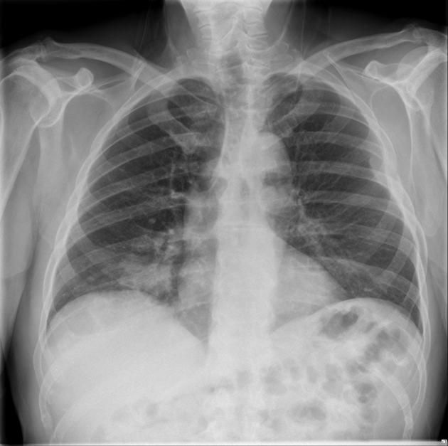
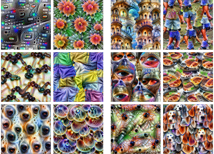
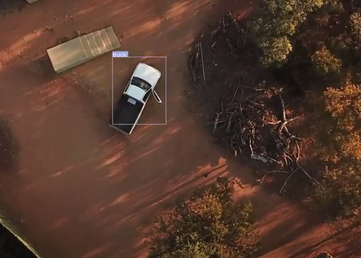
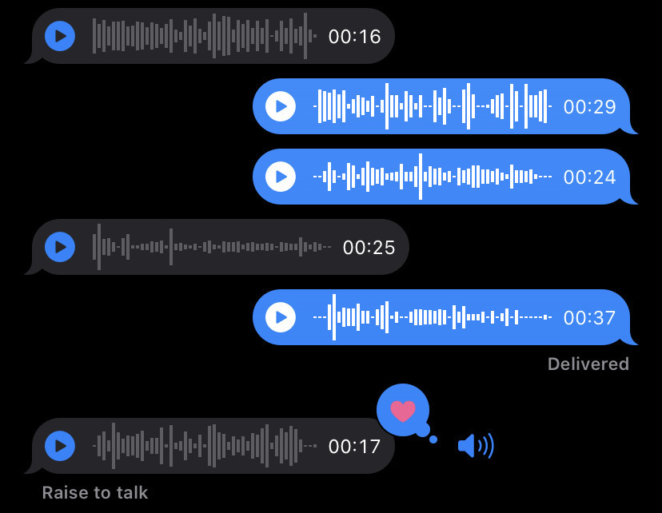
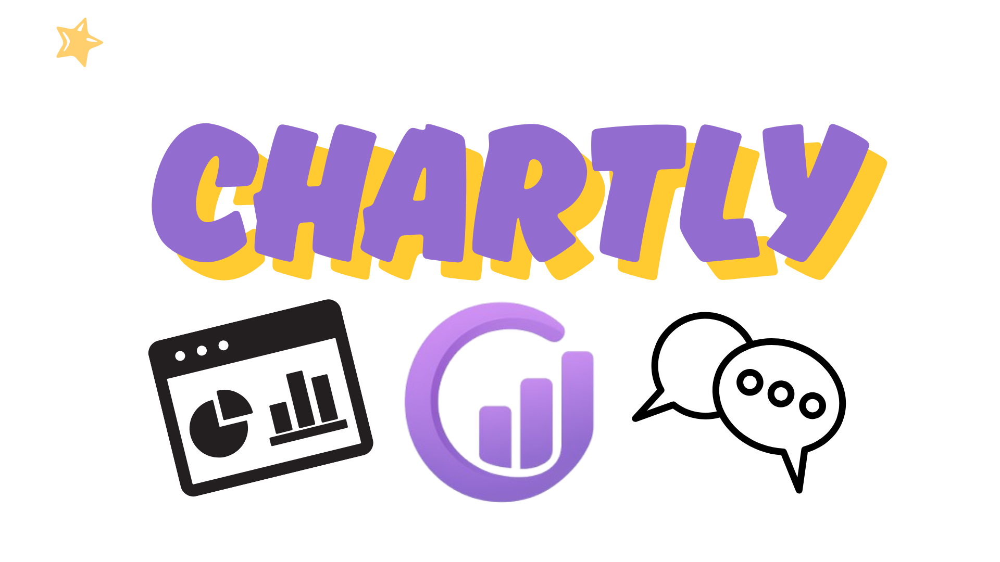
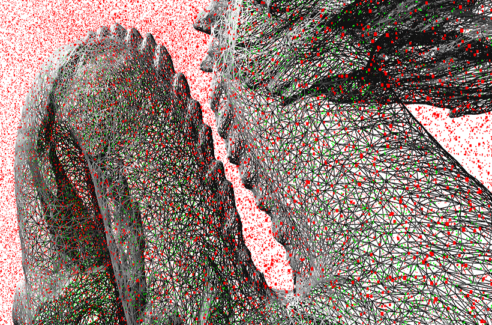
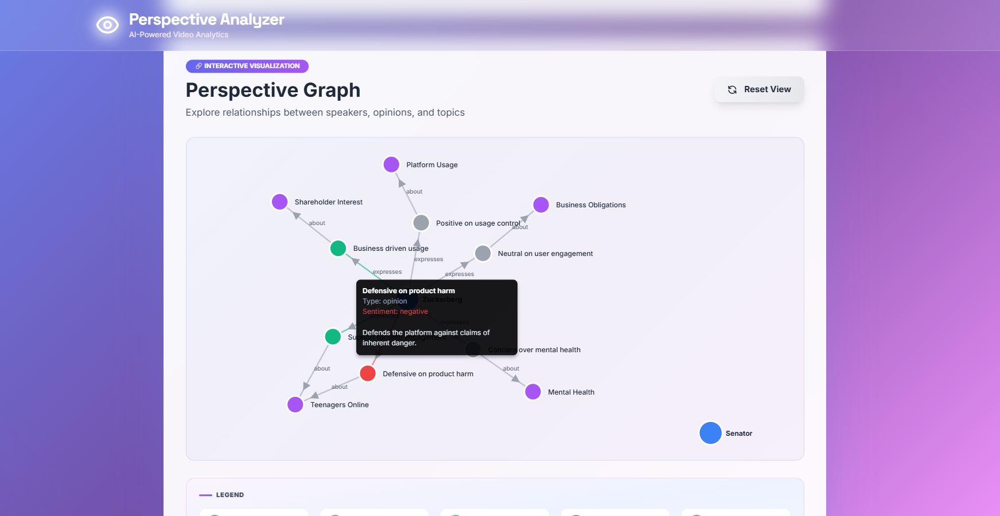

Projects
Research prototypes, freelance systems, and deployed applications

Sickness X-ray Based Detection
Used CNNs to predict patient sickness from chest X-ray images. Explored AlexNet, ResNet, and DenseNet architectures, and analyzed algorithmic bias in medical AI systems.

Unsupervised Deep Learning
Research framework to evaluate representation quality in unsupervised deep learning models. Focused on inter-model interpretability and efficiency without sacrificing performance.

Vehicle Detection In The Wild
Freelance project to detect vehicles in aerial imagery captured by drones. Uses YOLO with OpenCV, CVAT annotation, and PyTorch training pipeline.

Kure , Voice AI Platform
Fully containerized application for voice recording, transcription, and AI-driven analysis. Built with Flask, Django, PostgreSQL, Prometheus, and Grafana.
Dubuque City Traffic Monitoring
Data pipeline that fetches, processes, and stores traffic data from a client API. LSTMs, SVMs, K-means, and KNNs served via Flask with a unified monitoring dashboard.

Chartly , Odoo AI Charts
Odoo module for natural language–driven chart and visualization generation. Users describe what they want; Chartly queries the DB and renders it automatically.

Point In Polyhedron
CUDA implementation of the point-in-polyhedron problem. Parallelized on GPU using CUDA C for high-performance computational geometry.

Perspective Analyzer
Video and text analysis tool for detecting perspective and bias in media content. Uses ML to analyze viewpoints and sentiment patterns across sources.